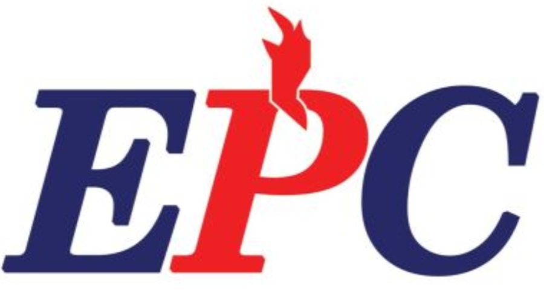

01
Enterprise APEX
HR and CRM modules, secure workflows, responsive pages, custom forms, and operational reports shaped around real requirements.
- Oracle APEX
- SQL & PL/SQL
- Forms & Reports
Open to Oracle APEX opportunities · Egypt, Europe & Remote
Oracle APEX Developer · Software Engineer
I turn complex business processes into clear, dependable Oracle APEX systems—backed by strong database, web, and automation engineering.
The value I bring
I combine Oracle application development with practical software engineering to create systems people can trust every day.
At EPC, I work across business requirements, database logic, application interfaces, infrastructure, and automation. I care about clarity for users, maintainability for teams, and measurable improvements for the business.
01
HR and CRM modules, secure workflows, responsive pages, custom forms, and operational reports shaped around real requirements.
02
Practical work with Oracle Linux and Oracle 19c environments, connecting reliable infrastructure to application delivery.
03
Laravel applications with role-based dashboards and PowerShell tools that remove friction from repetitive workflows.
Selected work
Three views into my enterprise, web, and systems engineering practice.
HR and CRM applications that translate operational requirements into structured workflows, purpose-built forms, and useful reports.
Complex processes and data need a clear path for different users.
Application flows, custom forms, reports, database work, and supporting Oracle infrastructure.
A production Laravel website built by a two-developer team, with a structured dashboard supporting Super Admin, Admin, and User roles.
Backend features, dashboard workflows, role-aware experiences, and iterative production improvements.
A live company platform that continues to support EPC’s digital presence.

PRODUCTION / LIVE
Hands-on C and Linux work developed through an embedded systems diploma—expanding my engineering perspective below the application layer.
Linux fundamentals, C programming, system-level concepts, and practical exercises.
A deeper understanding of the systems that software ultimately runs on.
$ uname -a Linux engineering 6.x $ gcc main.c -o system ✓ build completed $ ./system learning closer to the metal_
Experience
My professional experience began at EPC in November 2023, where my scope has grown across Oracle applications, web engineering, infrastructure, and automation.
Download APEX résumé↗Egyptian Petrochemicals Company · Alexandria, Egypt
Measured impact
faster execution for the automated workflow—turning repetitive steps into a dependable PowerShell process.
How I work
Good software starts with the real workflow, not assumptions.
Interfaces should make complex work feel direct and predictable.
Production systems grow through feedback, measurement, and iteration.
Technical range
A broad foundation helps me connect enterprise applications to the web, automation, and the systems beneath them.
Credentials
Professional Oracle credentials backed by practical enterprise application work.
OCT 31 · 2025
OCT 30 · 2025
Education
Pharos University in Alexandria · 2018—2023
National Programming Excellence Award
1st place in Kuwait · 2014
Let’s work together
I’m open to Oracle APEX opportunities in Egypt, Europe, and remote teams. Let’s discuss where enterprise thinking and practical engineering can create value.
mostu.yakout@gmail.com↗